Simple and fun to build
Building a PiBot is quick and easy using some great tools that we hope you may have knocking about your house - i.e. your hands, a brain (please borrow one if missing) and a screwdriver.
Support our project - Adopt one of a 100 fledgling PiBots!
Feeling adventurous? We're looking for the first pi-oneers to adopt a pre-release (version 0.9) PiBot. This PiBot has been tried and tested with dozens of kids and adults and while it's not yet singing and dancing, with your help we hope it soon will be. If you're confident with a command line interface and are happy to give some feedback we'd love to offer you a kit.
What's in the box?
- Chassis components (9 pieces)
- PiBot Interface Board including an arduino compatible microcontroller
- PiBot Audio Interface Board to drive the speaker
- Speaker 2W and full range
- Neopixels 8x programmable colour LEDs on a stick
- Gear assemblies, motor drivers & wheels because PiBot likes to move it!
- Micro servo controls the camera's tilt
- Stepper motor lets the camera pan left & right
- Set of cables
- Set of essential screws and spacers
- Battery holder to hold 4 x AA batteries
- Basic manual that shows how to put it all together
- A lovely wooden box that you can make a Bot House from
- A free upgrade to a v1.0 chassis when its ready
Whats not in the box?
- Rasberry Pi
- SD card
- Raspberry Pi camera module
- 4 x AA batteries - rechargeable ones are good!
- Mini Wifi module for communicating to PiBot wirelessly
- (Optionally) a microphone and audio interface to explore voice recognition capability
What next?
Once you have your pre-release kit. We'll give you access to a new part of the website to help you get started. This will include:
- Building and construction
- Wireless set up
- Controlling the PiBot's hardware
- Training your PiBot to talk
- Using the PiBot for remote time-lapse photography
- Wireless video streaming with the PiBot
- Please request more!
New to the Raspberry Pi and Programming?
Part of the PiBot project is to develop a super easy interface so that the PiBot can be accessed through any web browser. This will mean that you'll be able to control and program your PiBot from any smart phone, tablet or computer. If you'd like to meet a PiBot and learn how to build and start programming one, come to one of our workshops. See the workshop page for details.